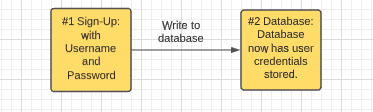

Overview Of Authentication
“I have not failed. I've just found 10,000 ways that won't work.” ― Thomas A. Edison
Now that we have a high overview of what authentication and authorization are, let's start zooming in on what the flow of authentication is and what we actually have to do to get it coded in our server!
Why Authenticate?
Authentication is used by a server to give permission for a user to access the data it serves.
It's important to understand authentication because it's necessary for the security of your app and to understand what every app on the internet does when you sign in. When building your fullstack projects at the end of the program, be sure to reference back here if you need any extra help with building your login.
The Steps of Authentication
Authentication is the process of comparing passwords to passwords to verify or authenticate the identity of a user.

- The username and password are sent to the server.
- The server accesses its database of users that holds the username and password.
- The server checks the provided username & password against the username & password in the database.
- If the credentials match, the user's identity is verified, and the application decides what's next.
- If not, a generic error message is returned.
The Sign-Up Overview
There's a difference between Sign-Up vs Sign-In. We first need to Sign-up.

The first step of authentication is to sign up! After all, we can't verify your identity if we don't have credentials to compare with what you provide to confirm you are who you say you are.... When one signs-up on any web app, their credentials (username/email & password) will be sent from the front-end to the server and written to the database.
NOTE: It's important to understand this because it will help you visualize how the server will be checking incoming "sign-in" credentials against previously written "sign-up" credentials.
It really is as simple as this:
- Input and submit email/username & password info on front-end to "sign-up"
- Front-End sends POST request with the the email/username & password to the server
- The server receives the credentials and
INSERTs a new entry in theuserstable - The user returns to the app to login by inputting and submitting their email & password on the front-end
- The front-end sends a POST Request with the credentials to the server
- The server
SELECTSthe previously written email that matches and checks to see if the passwords match - If
truethe next page in the app is sent to the front-end and a bearer token is stored in cookies (more on this soon) - If
falseanother "login" page is sent to the front-end
Hashing
There's a small step the summary above excludes called hashing. See, when we store passwords in our database we don't want to store plaintext because if our database is ever breached(hacked) the passwords will be readable by human-eyes and simple javascript functions. To protect our users we create new Strings that represent the passwords called a hash.
A hash is a unique and complicated String created by passing a simple String into a mathematical formula (algorithm) that scrambles and generates a unique String. The way it works is highly mathematical (luckily there are Node packages for it) but in short it could look like this:
| Simple String | The Hashed String |
|---|---|
| pony | 4B3E3C2F99046F92A61BAB6775848577 |
| apple | 1F3870BE274F6C49B3E31A0C6728957F |
| pony | 4B3E3C2F99046F92A61BAB6775848577 |
No matter what, if you pass pony through the hashing algorithm is will also produce the 4B3E3C2F99046F92A61BAB6775848577 every time. This is how passwords can be stored as hashes and later compared, hash to hash. We just use a hashing algorithm in the route on our server between receiving the request to "login" and when the server reads the previously stored hash in the database created during "sign-up".
You can play with how the MD5 hashing algorithm will create unique strings with any common string you put in here.
Once the plaintext password has been hashed the new unique String will be stored in the database along with the username/email.
The Code for Hashing
Below is a small Express server that has a hashing algorithm added to it called argon2. Read over the code and see if you can make sense of what's going on.
1 2 3 4 5 6 7 8 9 10 11 12 13 14 15 16 17 18 19 20 21 22 23 24 25 26 27 28 29 30 31 32 | |
As you might have seen, when someone sends a POST request to /signup it should include a username and password. If it does, the server will run the hashing function crypto.randonBytes & argon2i.hash on the password. You are probably wondering what salt is. salt is the number of times the algorithm is supposed to run before the hash is determined "complete".
Hackers have access to run the same algorithm that creates your password hashes. This means, if they get ahold of your list of usernames & passwords they can run them backwards as well and learn the plaintext version of your passwords and then access your user's data. Nevertheless, they will still be guessing at possible inputs to get to the correct password. To break through this barrier they will formulate something called a Brute Force attack, where in, they tell a powerful computer to run the same algorithm over and over on the list of hashed passwords attempting to get the right passwords. This is where a salt round comes in. A salt round is the number of times the algorithm scrambles the plaintext password. 1 salt = 1 time, 5 salts = 5 times. Each time you increase the salt you increase the difficulty for the hacker by a factor of about 10! By increasing this number you make it more expensive in both time and energy for the hacker to make it profitable to hack your users. The double-edge of this sword is that it also makes it more expensive for your computers to run the hashing algorithm. The trick is to find a happy medium! Usually 12 is the ideal number; but, some have suggested you calculate the number with the total amount of time you can stand.
To get an idea of why salting is so important when hashing password, check out this post from 2011.
SOURCE: Security StackExchange
The Sign-In Overview
Now that we know passwords will be hashed on sign-up, what happens when a user signs-in?
Obviously we don't want our user to have to input a username and password for every page and resource they'd like to access. Instead, we want them to have them sign-in once and then allow them to freely move around their account until they sign-off.
The trouble is that our server (just a computer) doesn't know who they are like we humans would if we saw them. So, to make this work we have to give the user a "wristband" that they would show to each part of the server when they wanted to see a new page or resource. This "wristband" is called a bearer token.
A bearer token, or a JSON Web Token/JWT, is a unique set of letters and numbers created by the server the represents a successful sign-in. Its generated when username & passwords match and sent back to the client (the user) and stored on their device so that it can be sent back to the server with each new subsequent request to see a new page or resource. In this way, the user can move freely about their account without worrying about signing-in over and over; but instead we developers just have to be smart enough to make that front-end client send the bearer token back with each new request, and make our server require a bearer token to allow the resources to be sent back with the response.
Additional Resources
- Article, TutorialsPoint, ExpressJS Authentication
- Article, Veracode - Zero to Hashing in 10 minutes
- Video, FreeCodeCamp - What are JWTs?
- Forum, StackOverflow - Cookie Naming Convention
- YT, Ben Awad - How to Store JWT in Memory